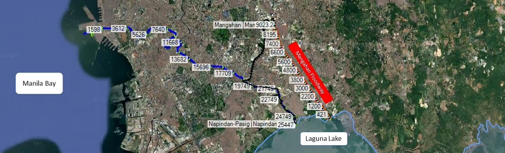

Rahim Mustaqim, MSc (Eng.)
Integrated hydrology & hydraulic modelling for the Pakil Pumped Storage Plant Climate Change Scenario – Laguna de Bay system using HEC-HMS, HEC-RAS, and Delft Dashboard.
 ▶ Project Overview (under development)Integrated hydrology, hydraulic, hydrodynamic, and sediment modelling for the Pakil Pumped Storage Plant–Laguna de Bay system using HEC-HMS, HEC-RAS, and Delft3D FM.
 ▶ Project Overview (under development)
▶ Project Overview (under development)
Numerical flood modelling and engineering analysis of river systems and alternative diversion channel designs using HEC-HMS & HEC-RAS
 ▶ Eksisting River Simulation (HEC-RAS 1D)
▶ Diversion River Simulation (HEC-RAS 1D)
▶ Eksisting River Simulation (HEC-RAS 1D)
▶ Diversion River Simulation (HEC-RAS 1D)
Numerical flood modelling and engineering analysis of river systems and and development of riverbank channel designs for capacity enhancement using HEC-HMS & HEC-RAS
 ▶ Eksisting River Simulation (HEC-RAS 2D)
▶ Eksisting River Simulation (HEC-RAS 2D)
Numerical flood modelling and engineering analysis of hospital drainage systems and alternative drainage channel designs using HEC-HMS & HEC-RAS
 ▶ Training Session
▶ Training Session
These guidelines provide a comprehensive framework for sustainable water supply management under the authority of Perum Jasa Tirta II, ensuring the reliable, efficient, and environmentally responsible utilization of water resources.